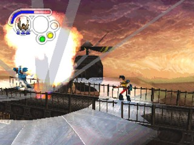
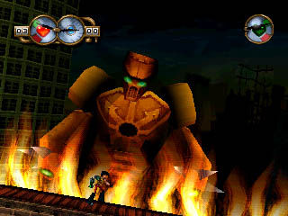
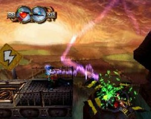
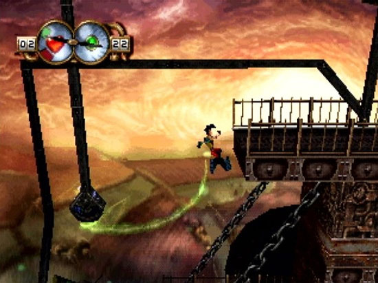
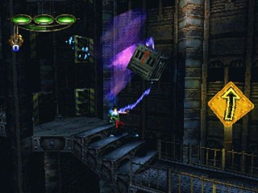
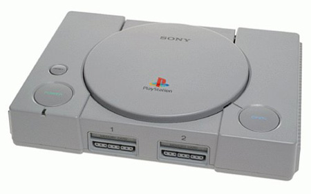

Truxton no Master System?
 Por Gigacom
Por Gigacom
Saquem só o nível do jogo que fez a Saturn Magazine
dedicar umas 4 páginas da revista, só para fazer
propaganda do que iria ser um dos maiores lançamentos para o
Saturn, derubando mitos, abrindo fronteiras, e trazendo gloria para o
32 bits da Sega!

|  |  |
|  |  |
Agora adivinhem onde ele exclusivamente foi aterrisar.

Wild9 é um game produzido
pela Shiny (a mesma que criou grandes franquias na época como MDK e Earth Worm
Jim), e publicado pela Virgin para o Playstation.
Eu poderia colocar algumas linhas aqui falando da historia
do jogo, dos personagens e coisa e tal, mas não é isso que interessa, o que de
fato todos querem saber é o nome da criatura que não deixou o jogo ir para o
Saturn. Mas só pra registrar, o joguinho é muito bom!!!
Pois bem, o Saturn oficialmente não recebeu as desculpas de praxe para não ganhar Wild 9, cêis sabem, aquela historinha emo de “ainnnn genti... o xaturn é taun difixil de ploglamar” e “o Saturn tá falido, não vamos nos lascar de trabalhar para um console já com um pé no cova”, mas nesse caso especifico, acredita-se que a Shiny decidiu não lançar mesmo o jogo para o Saturn por pura falta de interesse devido à vários motivos, dentre os quais o principal é...
Conseguir a licença para a fabricação de um CD de jogo para
um vídeo game tem seus custos. Primeiro tem que se negociar com a fabricante,
que tem uma mídia própria, uma gravadora própria, uma produta de manuais-encartes-case
próprias, além do serviço de distribuição próprios. Então se calcula se o custo
da distribuição do jogo + produção será = ou > que o retorno em lucro de
vendas. Em 98, quanto o Wild 9 tava pronto, o Saturn tava nas ultimas mesmo, já
com a Sega martelando os pregos e pintando o caixão do 32 bits, sendo que as
vendas de jogos dele, assim como de consoles, despencavam à cada mês,
produzindo uma sangria daquelas nos cofres da Sega e desencorajando qualquer
third partie de produzir pro Saturn pelo risco de levar um calote ou coisa
pior.
No final das contas, Wild 9 nem chamou tanta atenção no
Playstation, foi é ofuscado pela enxurrada de jogos que invadiam o mercado do
Pray, e ficou esquecido entre as fileiras de CDs nas lojas. Até que vendeu, deu
o retorno que a Shiny esperava, mas não o retorno que ela sonhava em ter como
com MDK... bem feito! Se tivesse lançado para Saturn um bando de nerds que nem
eu e você teria comprado só por comprar e ela taria mais rica. O castigo foi
dado, Deus é justo, mas apesar de tudo, bom mesmo seria se esse joguinho tivesse vindo para o velho Saturnão 
Acesse o Trombone e comente sobre essa matéria!